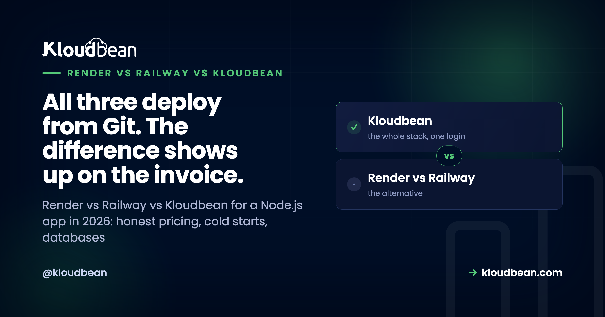

Render vs Railway vs Kloudbean for Node.js (2026)

Render vs Railway is the comparison every Node developer runs eventually, usually right after Heroku priced them out or a bill surprised them. All three, Render, Railway, and Kloudbean, deploy a Node app from a GitHub push. So the interesting question isn't "which one runs Node," it's what happens at month three: the bill, the cold starts, and where your database lives. This is the honest three-way, with a clear pick for each kind of project.
For a quick prototype with the smoothest developer experience, Railway. For a simple git-push PaaS with managed Postgres, Render (just know the free tier sleeps). For an always-on production app where you want a predictable flat bill and your database in the same dashboard, Kloudbean, from $8/mo with no per-usage metering and free migration. The real split is prototype convenience versus production predictability.
The quick verdict, by what you're building
No single winner, because they're tuned for different moments. Match the tool to the project:
- Prototype / hackathon / demo: Railway. The fastest path from repo to live URL, and the developer experience is genuinely the best of the three.
- Simple production app, git-push PaaS, managed Postgres in the box: Render. Clean and familiar, as long as you're on a paid instance so it doesn't sleep.
- Always-on production with a database and a bill you can forecast: Kloudbean. Flat pricing from $8/mo, the managed database next to the app, no cold starts, and free migration to get there.
My honest read after watching a lot of these choices: teams pick Railway or Render for how fast the first deploy feels, then re-evaluate once the app is real, the traffic is steady, and the invoice stops being cute. Optimize for month three, not the demo.
Pricing: the difference that actually surprises people
This is where the three genuinely diverge, and it's the number one thing developers complain about online.
Railway combines a plan fee with metered usage: CPU, RAM, databases, storage, and network egress are all billed by consumption, and a container is billed for the resources it holds even while idle. That's cheap for a sleepy prototype and hard to forecast once it's real. Developers regularly report small test services quietly billing far more than the headline plan price, and confusion between the plan fee, included usage, and prepaid credits. It isn't that metering is wrong; it's that the total is hard to predict.
Render separates a workspace plan from compute and storage, and bills bandwidth and build minutes on top. Free services can still generate charges once a card is on file, and the pricing model changed with a new workspace structure in 2026, so old articles and the current dashboard may not match. Verify the live numbers before you commit.
Kloudbean is a flat server plan from $8/mo. You know the number before you deploy, it doesn't move with traffic, and there's no separate egress meter to reverse-engineer at the end of the month. For a production app that needs to sit in a budget, predictable beats cheap-when-idle.
Cold starts and sleep
This one bites low-traffic apps hardest. Render's free web services spin down after about 15 minutes without traffic and take roughly a minute to wake on the next request, so the first visitor after a quiet stretch waits, or sees a loading screen. Paid instances don't spin down, which in practice means paying to remove the sleep. Railway keeps services running rather than sleeping, but you pay for that always-on time through metered usage. Kloudbean is always-on by default on a real server, so there's no scale-to-zero and no cold-start penalty; the trade, in fairness, is that a genuinely idle hobby project doesn't get to drop to zero cost.
The database, where it quietly gets expensive
A Node app almost always needs Postgres, MySQL, MongoDB, or Redis, and this is where the platforms differ in a way that matters. Render's free Postgres is a development resource, not a durable one: per their docs it expires 30 days after creation, with a 14-day grace period, after which the database and its data are deleted. Plenty of people have lost a forgotten side-project database that way. Railway makes databases easy to add, but each is another metered service on the bill. Kloudbean runs seven managed engines one-click (PostgreSQL, MySQL, MariaDB, MongoDB, Redis, Memcached, Elasticsearch) in the same account as the app, backed up automatically, so the app and its data sit together instead of across a metered boundary.
Render vs Railway vs Kloudbean, side by side
| Dimension | Railway | Render | Kloudbean |
|---|---|---|---|
| Best for | Prototypes, best DX | Simple git-push PaaS | Always-on production |
| Pricing shape | Plan fee + metered usage | Workspace + compute + bandwidth | Flat server plan, from $8/mo |
| Predictability | Hard to forecast at scale | Several meters to combine | Fixed monthly number |
| Cold starts | None (metered always-on) | Free tier sleeps (~15 min) | None (always-on) |
| Managed database | One-click, metered separately | Managed Postgres; free tier expires | 7 engines, one-click, beside the app |
| Egress | Metered | Metered above the included amount | Not metered |
| Migration help | Self-serve | Self-serve | Free migration assistance |
| Scale-to-zero | No | Yes (free tier) | No (always-on by design) |
Read it as a fit check, not a scoreboard. Verify each platform's current pricing on its own page; plans and tiers move, and this table is about shape, not exact dollars.
What developers actually say
The most useful signal isn't a feature list, it's the recurring complaint. Paraphrasing common threads from Reddit and support forums (2024 to 2026), treat these as patterns, not universal truths:
- Railway bills are hard to predict. A frequent theme is a tiny test service with no real users quietly climbing to a few dozen dollars a month, plus confusion over how the plan fee, included usage, and credits combine. Some developers also report services pausing when prepaid credit runs out.
- Render free services sleep, and free databases expire. The cold-start delay on the free tier is the most repeated gripe, along with surprise that a free Postgres database is time-limited by design.
- People migrate for confidence, not just price. One widely shared sentiment after moving off a metered platform: the new bill was higher, but they could finally sleep at night. Predictability and support mattered more than the raw number.
Fair credit where it's due: the same threads praise Railway's deployment speed and dashboard, and Render's clean git-push workflow and managed Postgres. Neither is a bad product. They're prototype-shaped, and some apps outgrow that shape.
Where Kloudbean fits
Kloudbean is the pick when the app is past the demo: it needs to stay awake, it has a database, and you want to know the bill in advance. Your Node app deploys from GitHub, runs always-on under PM2, and sits next to a one-click managed database in the same dashboard, on a flat plan from $8/mo with no egress meter. When you're moving off Railway or Render, free migration assistance runs the first cutover with you.
The honest boundary, so this stays a comparison and not a sales pitch: if you want scale-to-zero for a project that genuinely idles, or you just want the fastest possible first deploy for a throwaway, Railway or Render's free tier will serve you better. Kloudbean's case is steady, predictable production, not paying nothing while nobody's looking.

Moving off Railway or Render
Migrating a Node app is a repo, a set of environment variables, and a database. Point a new Kloudbean server at the same GitHub repo, copy the environment variables into the dashboard, move the database with a standard dump and restore, then swap the connection string and redeploy.
How it fits the rest of your stack
Weighing the wider field first? Where to deploy a Node.js app covers every option. The one-on-ones go deeper: Render alternative and Railway alternative. For the hands-on side, deploy a Node app to a managed cloud and managed PostgreSQL hosting.
Trade metered surprises for a flat, always-on Node home.
Deploy from GitHub, run always-on under PM2, and keep a managed PostgreSQL, MySQL, MongoDB, or Redis in the same dashboard, at a price you know before you deploy. Start free at kloudbean.com, see plans on pricing.
Flat pricing from $8/mo · Always-on, no cold starts · Managed database beside the app · No egress meter · Free migration · Free trial
FAQ
Render vs Railway: which is better for a Node.js app?
Railway has the smoother developer experience and is great for prototypes, but its usage-and-credit billing is harder to forecast. Render is a cleaner git-push PaaS with managed Postgres, but its free tier sleeps and its free database is time-limited. For a quick build pick Railway; for a simple paid PaaS pick Render; for predictable always-on production, a flat-priced managed host is the steadier choice.
Is Railway expensive?
It's cheap for a small, idle prototype and hard to predict as it grows. Railway bills a plan fee plus metered CPU, RAM, databases, storage, and egress, and a container is charged for the resources it holds even when idle. Developers often report small services costing far more than the headline plan. If a predictable monthly number matters, a flat server plan is easier to budget.
Do Render's free services really sleep?
Yes. Per Render's docs, free web services spin down after about 15 minutes without traffic and take roughly a minute to start on the next request, so the first visitor waits. Paid instances don't spin down. For a production site that means paying to remove the sleep, or choosing an always-on host instead.
Does Render delete free databases?
Per Render's documentation, a free Postgres database expires 30 days after creation, followed by a 14-day grace period to upgrade, after which the database and its data are deleted. It's meant as a development resource, not durable storage, so back up or upgrade before the window closes.
Railway vs Render for production, which is safer?
Both run production apps, but developers frequently move to a more predictable setup once revenue depends on it, citing billing surprises and support gaps rather than raw price. A common sentiment after switching is paying a bit more for the confidence to stop worrying. Weigh predictability and support, not just the sticker.
What's the cheapest always-on Node.js host?
Free tiers are cheapest but sleep, so for always-on the real options are a plain VPS if you'll run the ops yourself, or a flat managed plan (Kloudbean starts at $8/mo) if you want the server and database handled without a metered bill. Compare total cost including the database, egress, and your own time.
How do I move a Node app from Railway or Render to Kloudbean?
Point a new server at the same GitHub repo, copy your environment variables, and restore the database with a standard dump and load. Bring it up, verify it, then switch traffic. Kloudbean's free migration assistance can run that first cutover with you so downtime stays minimal, database included.